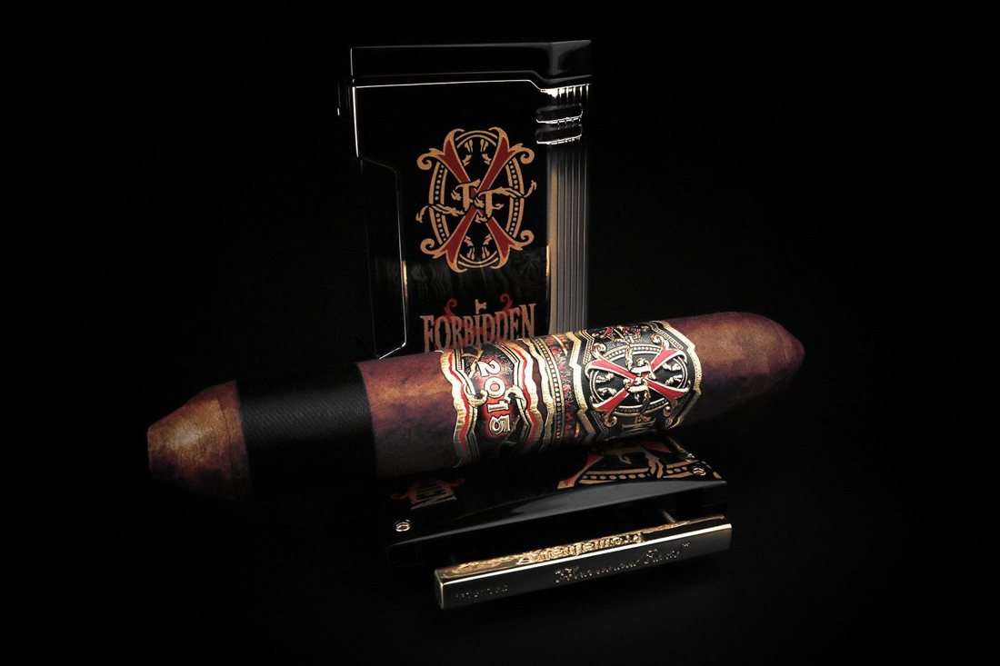
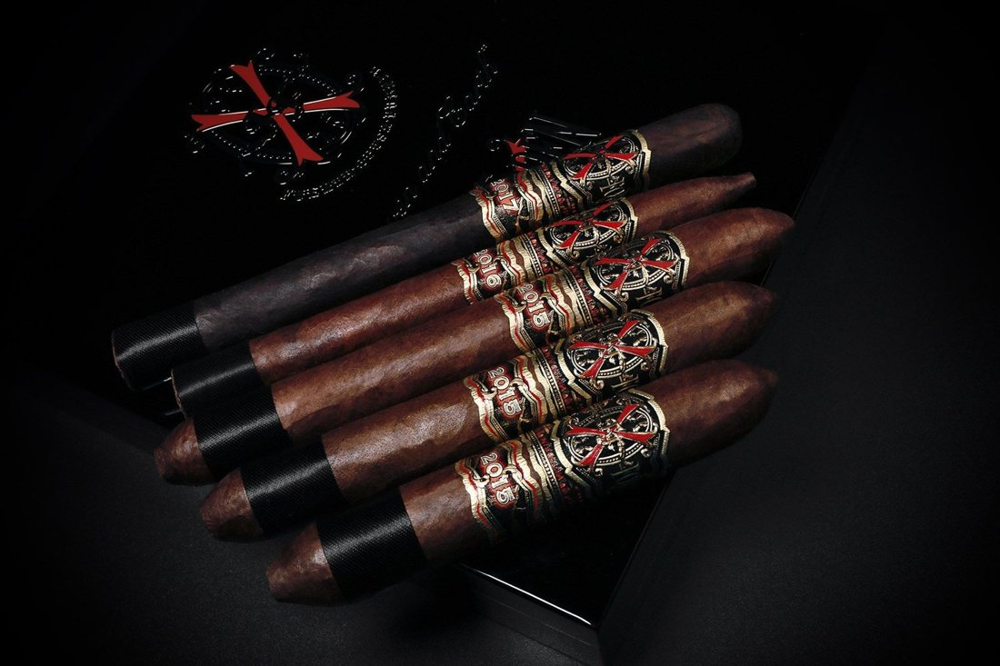
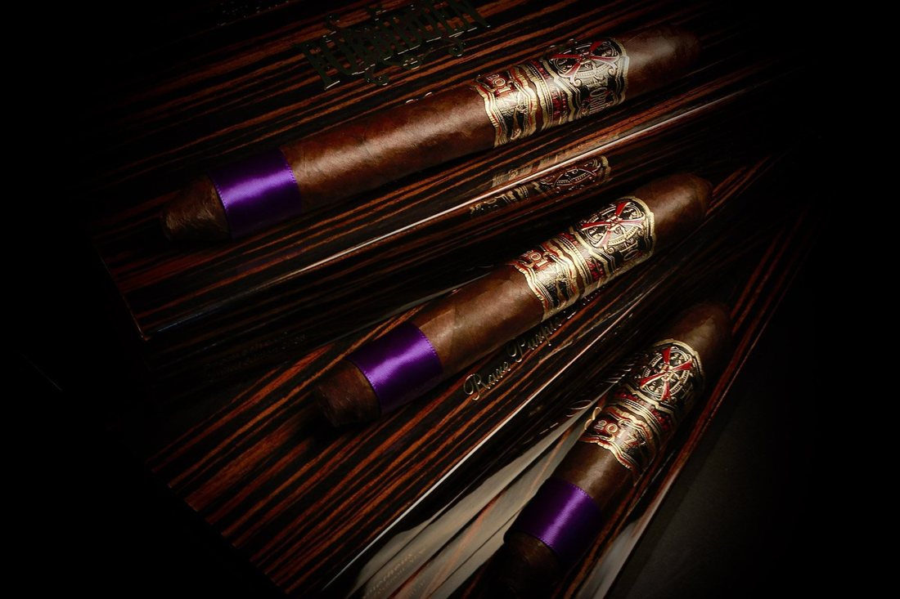
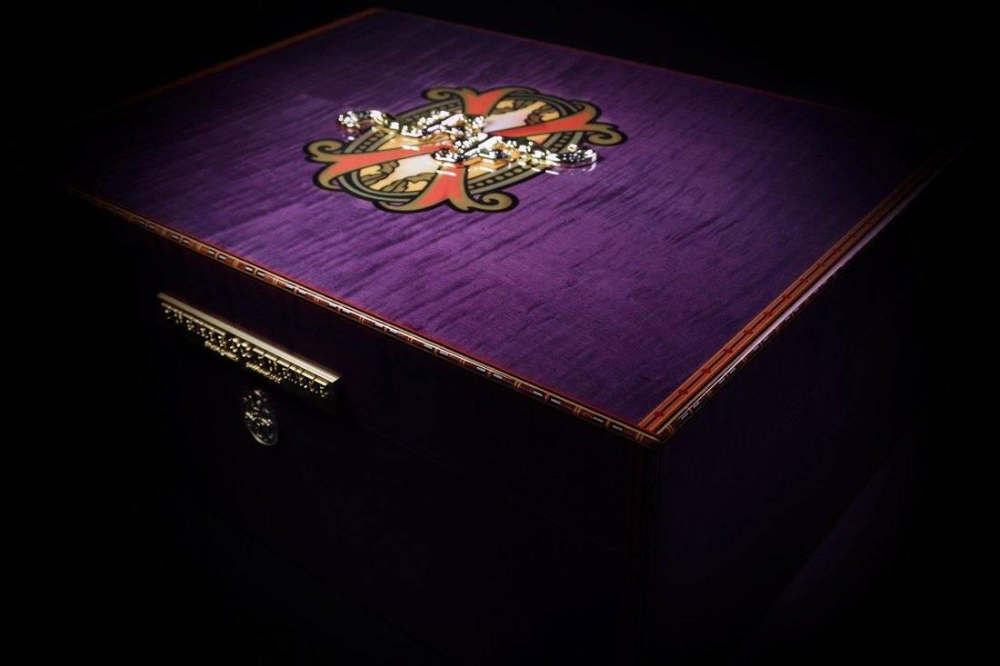

Feature — Opus X and Its Limited Lines
The Fuente family's Fuente Fuente Opus X is the archetypal Dominican puro — a cigar made with a wrapper grown in the Dominican Republic, with every leaf Dominican. Distribution runs on an allocation system that keeps supply tightly rationed, and its limited lines become objects of fierce competition among collectors around the world. In this feature we set out the positioning of the main lines, together with the new developments of 2026.
The story begins in 1991. At a time when it was said that fine wrapper leaf could not be grown in Dominican soil, Carlos “Carlito” Fuente Jr. planted Corojo seed on land near Bonao, and brought in his first harvest in 1992. It was with the shade-grown wrapper raised on that farm, Château de la Fuente, that Fuente Fuente Opus X was born in 1995. The cigars are rolled at the Tabacalera A. Fuente factory in Santiago. From here, a succession of limited lines has branched off.
◆ The Core Line and “Perfecxion”
The body of the range is a Dominican puro in the Château-grown wrapper. Size groups such as Perfecxion X, No. 2 and 888 form its centre, and they are the foundation on which every limited line stands. Because of the allocation system, arrivals even at authorised retailers are irregular, and the normal state of affairs is that each size sells out and then waits for the next allocation.
◆ Angel's Share

The name comes from the distiller's term for the portion that evaporates away during ageing — “the angels' share.” The line is said to use leaves from the upper part of the plant, closer to the sun, and its character is sweeter and rounder than the core line's. Its flagship size, the Reserva d'Chateau, placed No. 9 (95 points) in Cigar Aficionado's “Top 25 of 2025.”
◆ Lost City

This line traces its origin to leaf grown at Château de la Fuente in connection with the filming of the movie The Lost City. Because it uses leaf grown in a different season from the regular crop, it was born as a limited edition with a pedigree. It is offered as single cigars and in boxes of ten, and among the Opus X limited lines it is one of the comparatively more obtainable.
◆ Forbidden X

A family of commemorative lines bearing the name “forbidden.” With the Forbidden X 13 series, themed on the number “13,” and special shapes such as the BBMF, these are lines with a strong collector character. In this desk's survey (November 3), we confirmed that Cigar Country in the Dominican Republic was listing 20-count boxes at $1,599.95 each (approx. ¥253,000), shown as in stock. However, that shop's guidance on shipping to Japan is contradictory, and whether these cigars can be obtained from Japan remains unconfirmed.
◆ Heaven and Earth — the Topmost Label
Heaven and Earth is a label apart, handled by Fuente Aged Selection and Prometheus — a home for vintage cigars and ultra-limited editions.
Rare Black: It debuted in 2019 as a 6⅞ × 44 torpedo, and a double corona was added in 2021. In 2026, three new Diadema sizes (54, 56 and 60) have been added, and shipping began on August 31 (halfwheel, September 4). U.S. prices are $69 (approx. ¥10,900) per cigar for the Diadema 54 and $67.50 (approx. ¥10,700) for the 56, in boxes of ten. A “Six Cigar Selection” sampler — all five sizes plus one more Diadema 54 — is also offered at $425 (approx. ¥67,300).

Carlito's X Rare Purple: The other pillar. A purple foot ribbon is its marker, and in 2026 a Diadema Selection has been rolled out at the same time as Rare Black's.

Big Purple Dream Humidor: A humidor holding 100 cigars, limited to 60 units worldwide. The first 30 units were shipped at the end of 2025, and the remaining 30 are scheduled to ship in the year-end holiday season of 2026 (Fuente Aged Selection official).

◆ A Note for Those Hunting from Japan
In this desk's survey of overseas shops (November 3–4), we found no overseas retailer that both clearly stated it ships to Japan and had confirmed stock of the limited lines. With most shops, the words “worldwide shipping” alone do not tell you whether Japan is covered, and there is little material on which prices or stock can be stated with confidence — that is the honest position. Because the allocation system makes arrivals themselves irregular, these are cigars for which the moment you come across one at a trustworthy shop is the moment to buy.
Sources for this feature: Fuente Aged Selection official, “2026 New Releases” https://www.fuenteagedselection.com/collection/2026-new-releases / Arturo Fuente official website (the history of Château de la Fuente) https://arturofuente.com/the-top-25-cigars-of-2023/ / halfwheel (September 4, 2026; report on the Diadema shipments) https://halfwheel.com/prometheus-ships-diademas-for-opusx-rare-black-rare-purple-god-of-fire-never-back-down-special-reserve/478561/ / this desk's survey of overseas shops (November 3–4, 2026)